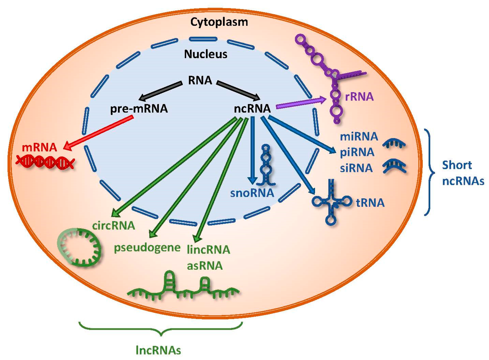

Introduction To Transcriptomics
What Is Transcriptomics?
Transcription is the process of making an RNA copy of a gene sequence
DNA can be described as being like a giant book of instructions
Some regions are defined as genes
- Originally considered to be the basic unit of inheritance
- Now used to describe a region of DNA transcribed into RNA

What Is Transcriptomics?
Transcriptomics is the study of transcribed RNA
Transcribed RNA falls into 2 broad classes
- Messenger RNA (mRNA)
- Codes for protein sequences
- Non-coding RNA (ncRNA)
- Multiple types of functional RNA
- rRNA, tRNA \(\implies\) protein translation
- lncRNA, miRNA, snRNA, piRNA etc
Prokaryotes \(\implies\) mRNA, rRNA & tRNA

By Thomas Shafee - Own work, CC BY 4.0, Wikimedia Link
Functional RNA

(An incomplete list)
- pre-mRNA + mRNA
- lncRNA + lincRNA
- miRNA, siRNA, shRNA, piRNA
- rRNA + tRNA
- snRNA + snoRNA
- SRP RNA
- eRNA
- circRNA
Eukaryotic mRNA Processing

Image by the National Human Genome Research Institute
RT-qPCR

A 10-fold dilution series
Serial Analysis of Gene Expression (SAGE)
- First high-throughput quantification method was Serial Analysis of Gene Expression (SAGE) (Velculescu et al. 1995)

- mRNA \(\rightarrow\) cDNA using biotinylated primers
- cDNA bound to beads (using biotin) & cleaved
- 11mer “tags” were ligated into long sequences using linker sequences
- Sequenced using Sanger Sequencing
- Deconvolution & counting
- First count-based transcriptomic methods developed
Microarray Technology

- Truly launched the modern transcriptomics era
- Quantified thousands of transcripts simultaneously
- Relied on development of Human Genome Project (+ other organisms)
- Analysis in R/Bioconductor
- Rv1.0.0 (2000)
- Bioconductor (Gentleman et al. 2004)
- Modern statistical high-throughput models developed